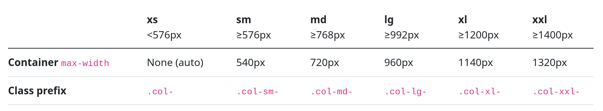

Bootstrap Rejilla
Rejilla
La rejilla de Bootstrap és un sistema de disposició que utilitza una estructura basada en columnes per a organitzar i distribuir contingut. Aquest sistema de rejilla facilita la creació de llocs web responsius i adaptats a diferents dispositius.
Aquí tens una descripció bàsica de com funciona la rejilla de Bootstrap:
Estructura Bàsica:
- La rejilla està dividida en 12 columnes.
- Cada fila (
<div class="row">) pot contenir fins a 12 columnes. - Pots combinar columnes per ocupar l'espai disponible en una fila.
Classes de Columnes:
- Utilitza classes com
col-,col-sm-,col-md-, icol-lg-per especificar la quantitat de columnes que una caixa ocuparà en diferents dimensions de pantalla. - Per exemple,
col-12significa que una caixa ocuparà totes les 12 columnes,col-md-6significa que ocuparà 6 columnes a partir de la dimensió mitjana (md).
Vegem les messures que s'apliquen per a les pantalles.

Exemple Pràctic:
En aquest exemple:
- En pantalles petites (
col-12), les caixes ocuparan totes les 12 columnes. - En pantalles mitjanes (
col-md-6), les caixes ocuparan 6 columnes, deixant 6 lliures per a altres caixes. - En pantalles grans (
col-lg-4), les caixes ocuparan 4 columnes, permetent que hi hagi 3 caixes en una fila.
Resposta a Pantalles Petites:
- Les classes sense prefix de dimension (
col-) s'apliquen a totes les dimensions de pantalla. - Quan no especifiques cap classe de dimensionament, Bootstrap assumeix que vols que aquesta configuració s'apliqui a totes les dimensions, és a dir, que sigui
col-12.
Offset:
- Pots utilitzar classes d'offset com
offset-md-2per desplaçar una caixa cap a la dreta.
Classes d'Alçada:
- Pots utilitzar classes com
align-self-start,align-self-center, ialign-self-endper controlar l'alineació vertical d'una caixa dins d'una fila.
Classes d'Ordenació:
- Pots utilitzar classes com
order-1,order-2, etc., per canviar l'ordre de les caixes en una fila.
Ús de la Rejilla en una Fila:
- La suma total de columnes en una fila no ha de ser superior a 12.
Amb aquesta estructura bàsica, la rejilla de Bootstrap permet una disposició flexible del contingut en funció de la grandària de la pantalla, facilitant la creació de llocs web responsius. A més, pots personalitzar el comportament per a diferents dimensions de pantalla mitjançant classes específiques.